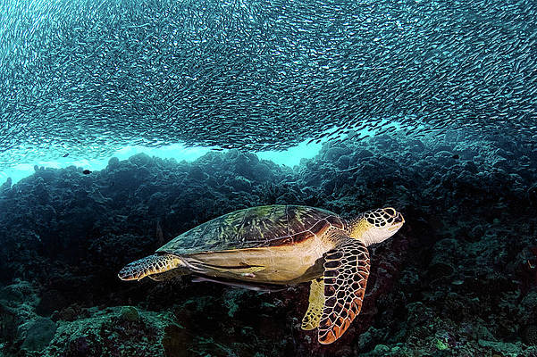

Green sea turtle

There are five varied species of sea turtles in Sri Lanka's waters, including the green sea turtle (Chelonia mydas). Due to its threatened status, it is protected by Sri Lankan law.
The coastal waters near Sri Lanka are home to green sea turtles, which eat algae and seagrasses. On numerous beaches in Sri Lanka, including Rekawa, Kosgoda, and Kalametiya, they have been observed to lay their eggs.
Despite conservation efforts, green sea turtles in Sri Lanka are in danger from several factors, such as habitat loss, pollution, and poaching. Local organizations are working to safeguard turtle nesting areas, promote sustainable tourism methods, and increase public awareness of the value of sea turtle conservation.
To ensure both the survival of the green sea turtles and the wellbeing of the marine ecosystem, it is crucial to keep track of and safeguarding Sri Lanka's green sea turtle populations.
The Hawksbill turtle

The Hawksbill turtle (Eretmochelys imbricata) is one of five sea turtle species found in Sri Lanka's waters. It is a severely endangered species and is protected by Sri Lankan law.
The coastal waters near Sri Lanka are home to hawksbill turtles, which eat sponges, algae, and other invertebrates for food.
Despite conservation efforts, Hawksbill turtles face several threats in Sri Lanka, including habitat loss, pollution, and poaching. Local organizations are working to protect turtle nesting sites, raise awareness about the importance of sea turtle conservation, and promote sustainable tourism practices.
Overall, it is critical to continue monitoring and protecting Hawksbill turtle populations in Sri Lanka to ensure their survival and the health of the marine ecosystem. They are known to lay their eggs on several beaches in Sri Lanka, including Rekawa, Kosgoda, and Kalametiya.